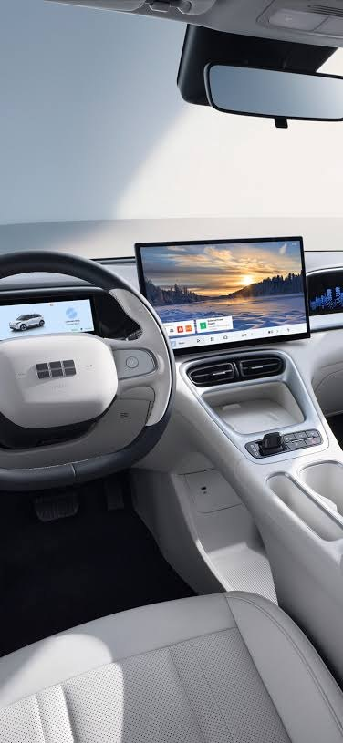

Spesifikasi Geely EX2 Lengkap: Dimensi, Baterai, dan Fitur

Berikut rangkuman spesifikasi Geely EX2 yang mengikuti brosur resmi Geely Indonesia, lengkap dengan penjelasan singkat agar mudah dipahami. Angka dapat berubah tanpa pemberitahuan, jadi konfirmasikan data terbaru ke tim penjualan sebelum membeli.
Dimensi dan kapasitas
| Aspek | Keterangan |
|---|---|
| Panjang x lebar x tinggi | 4.135 x 1.805 x 1.580 mm |
| Jarak sumbu roda | 2.650 mm |
| Ground clearance | 160,8 mm (Pro), 162 mm (Max) |
| Jumlah kursi | 5 |
| Bagasi belakang | 375 liter, sampai 1.320 liter dengan kursi dilipat |
| Bagasi depan | 70 liter |
Penggerak dan performa
| Aspek | Keterangan |
|---|---|
| Penggerak | Roda belakang (RWD) |
| Motor | Permanent magnet synchronous motor |
| Sistem penggerak | 11-in-1 electric drive |
| Daya maksimum | 85 kW |
| Torsi maksimum | 150 Nm |
| Kecepatan maksimum | 130 km/jam |
| Akselerasi 0-100 km/jam | 11,5 detik |
| Mode berkendara | Eco, Comfort, Sport |
Baterai dan pengisian daya
| Aspek | Keterangan |
|---|---|
| Kapasitas baterai | 40,8 kWh |
| Jenis baterai | Lithium iron phosphate (LFP) |
| Jarak tempuh gabungan NEDC | 395 km |
| Konsumsi energi NEDC | 11,8 kWh per 100 km |
| Pengisian AC 10-100% | sekitar 6,5 jam |
| Pengisian DC 30-80% | sekitar 25 menit |
| Daya DC maksimum | 70 kW |
| V2L (kendaraan ke beban) | Ada di Pro dan Max |
| Jadwal pengisian jarak jauh | Hanya varian Max |
Sasis, rem, dan roda
- Suspensi depan McPherson dan belakang multi-link.
- Rem depan cakram berventilasi dan belakang cakram solid, dengan rem parkir elektronik (EPB).
- Pro memakai velg baja 15 inci, Max memakai velg alloy 16 inci.
Fitur eksterior dan interior
- Lampu depan full LED dengan fungsi follow me home di semua varian.
- Jok berbahan leatherette perforasi.
- Jok pengemudi 6 arah, manual di Pro dan elektrik di Max. Jok penumpang 4 arah manual.
- Lampu ambien 256 warna hanya di Max.
- Ventilasi AC untuk kursi belakang.
- Warna interior standar Dark Grey. Ivory White tersedia sebagai warna khusus pada Max.
Teknologi dan keselamatan
- Infotainment Flyme Auto dengan layar sentuh 14,6 inci dan panel instrumen LCD 8,8 inci.
- Kontrol kendaraan lewat aplikasi hanya di Max.
- Airbag pengemudi, penumpang depan, dan samping depan di semua varian. Airbag tirai samping hanya di Max.
- Kamera belakang di Pro. Kamera panorama 540 derajat di Max.
- ADAS level 2 dengan 12 fungsi hanya di Max.
Pilihan warna eksterior
Aurora Pink, Stellar Blue, Nebula Beige, Moon White, Star Silver, dan Comet Gray. Aurora Pink dan Stellar Blue termasuk warna khusus yang mungkin masuk paket tambahan. Pembahasannya ada di pilihan warna EX2.
Cara membaca angkanya
Angka NEDC dihasilkan di kondisi uji standar, sehingga pemakaian nyata biasanya berbeda. Untuk memahami konsumsi energi dan jarak tempuh di jalan, baca jarak tempuh nyata EX2 dan efisiensi mobil listrik. Untuk memilih varian, lihat perbedaan EX2 Pro dan Max.
Ingin melihat unitnya langsung? Hubungi kami untuk jadwal test drive.
Ringkasan angka penting
Jika kamu hanya punya waktu sebentar, ingat angka ini: baterai LFP 40,8 kWh, jarak tempuh NEDC 395 km, daya 85 kW, torsi 150 Nm, pengisian cepat 30-80% sekitar 25 menit, bagasi 375 liter ditambah 70 liter di depan, dan layar infotainment 14,6 inci.
Catatan penting dari brosur
Brosur resmi menegaskan beberapa hal. Gambar dan warna pada materi promosi hanya ilustrasi dan bisa sedikit berbeda dari aslinya. Spesifikasi, warna, dan fitur dapat berubah tanpa pemberitahuan. Angka jarak tempuh dan konsumsi mengikuti metode NEDC, sehingga hasil nyata akan berbeda tergantung gaya berkendara dan kondisi. Karena itu, cocokkan data dengan unit yang kamu lihat langsung dan minta konfirmasi tertulis jika ada fitur yang menjadi alasan utama kamu membeli.
Tanya jawab
Berapa kapasitas baterai Geely EX2?
Baterai lithium iron phosphate (LFP) berkapasitas 40,8 kWh dengan jarak tempuh gabungan NEDC 395 km.
Berapa lama mengisi daya Geely EX2?
Pengisian AC dari 10 sampai 100 persen sekitar 6,5 jam, sedangkan pengisian cepat DC dari 30 sampai 80 persen sekitar 25 menit dengan daya maksimum 70 kW.
Berapa ukuran bagasi Geely EX2?
Bagasi belakang 375 liter dan bisa mencapai 1.320 liter jika kursi dilipat. Ada juga bagasi depan 70 liter.